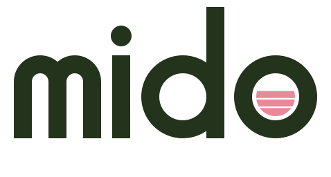

A — «Слои» · рекомендую
Буква «o» — стакан в разрезе, налитый слоями. На сайте слои окрашиваются в цвета собранного напитка.

Буква «o» — стакан в разрезе, налитый слоями. На сайте слои окрашиваются в цвета собранного напитка.


B — «Росток»
Точка над «i» — чайный лист: i растёт как росток. Натурально и тихо.

Точка над «i» — чайный лист: i растёт как росток. Натурально и тихо.